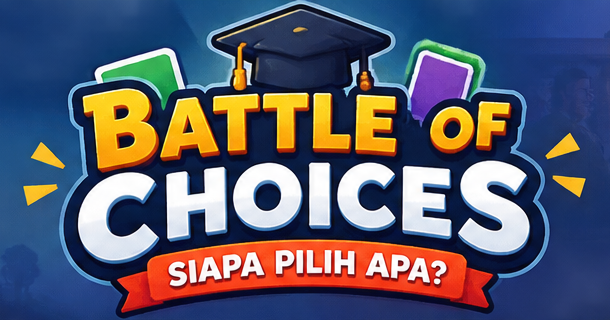

🧩 Latihan Mandiri
Peserta membuka pilihan rahasia sendiri, mengerjakan checklist pembahasan, dan memperoleh nilai refleksi pribadi.
Simulasi keputusan berbasis perilaku dan model Multinomial Logit. Kenali responden, baca kecenderungan model, kunci prediksi, lalu pertanggungjawabkan argumentasi Anda.

Bank kasus dan sistem penilaian Latihan Mandiri dipisahkan dari Permainan Resmi.
Peserta membuka pilihan rahasia sendiri, mengerjakan checklist pembahasan, dan memperoleh nilai refleksi pribadi.
Prediksi dikunci sebelum reveal. Fasilitator membuka pilihan aktual, menilai argumentasi, lalu mengonfirmasi skor.
Bank kasus berbeda dari Permainan Resmi. Tidak memerlukan PIN fasilitator.
Pilih sesi kelompok offline atau individual online.
Fasilitator mengelola sesi, membuka pilihan aktual, menilai argumentasi, dan menekan CONFIRM SCORE.
Sesi individual dengan pencatatan skor resmi dan leaderboard.
Ronde 1
Peringkat khusus Permainan Resmi.
Untuk menjaga validitas permainan, sesi resmi memerlukan alur fasilitator, PIN, bank kasus resmi, penilaian argumentasi, dan penyimpanan skor ke Supabase. Bagian ini tidak akan digantikan dengan skor latihan lokal.